Comment reprendre le sport sans réveiller une douleur au genou ou à la cheville ?
Comment reprendre le sport après une pause ? Progression, récupération et signes à surveiller pour vos genoux et chevilles. Les repères du Dr François Lozach.
Vos questions du quotidien.
Des repères pour vos articulations,
vos soins et votre récupération.
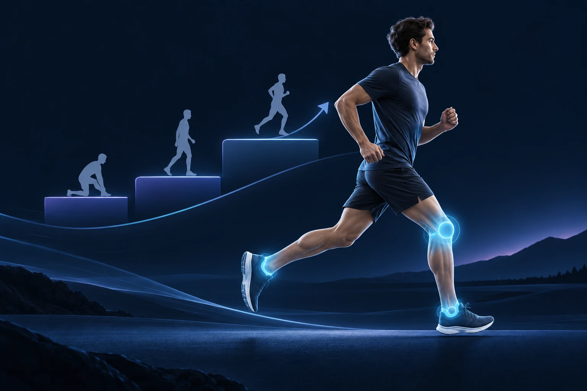
Genou, cheville : comment retrouver le plaisir du sport après une pause ?
Lire l’articleComment reprendre le sport après une pause ? Progression, récupération et signes à surveiller pour vos genoux et chevilles. Les repères du Dr François Lozach.

Une fissure du ménisque à l’IRM ne nécessite pas toujours une opération. Comprendre la place de la rééducation, de la suture et de l’arthroscopie.
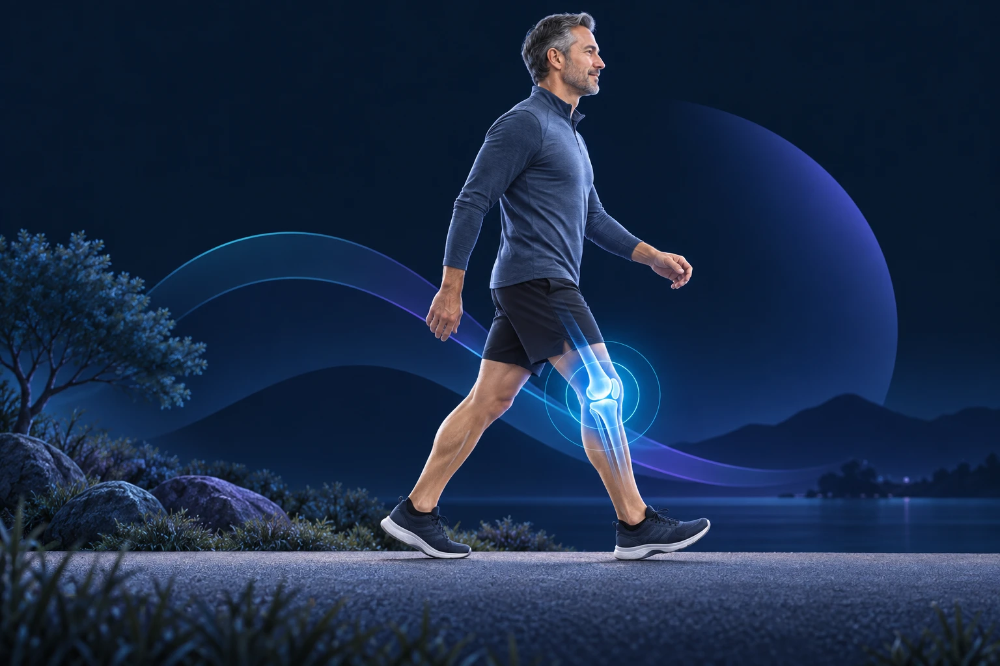
La marche adaptée fait partie du traitement de l’arthrose du genou. Découvrez comment doser l’activité et réagir pendant une poussée douloureuse.
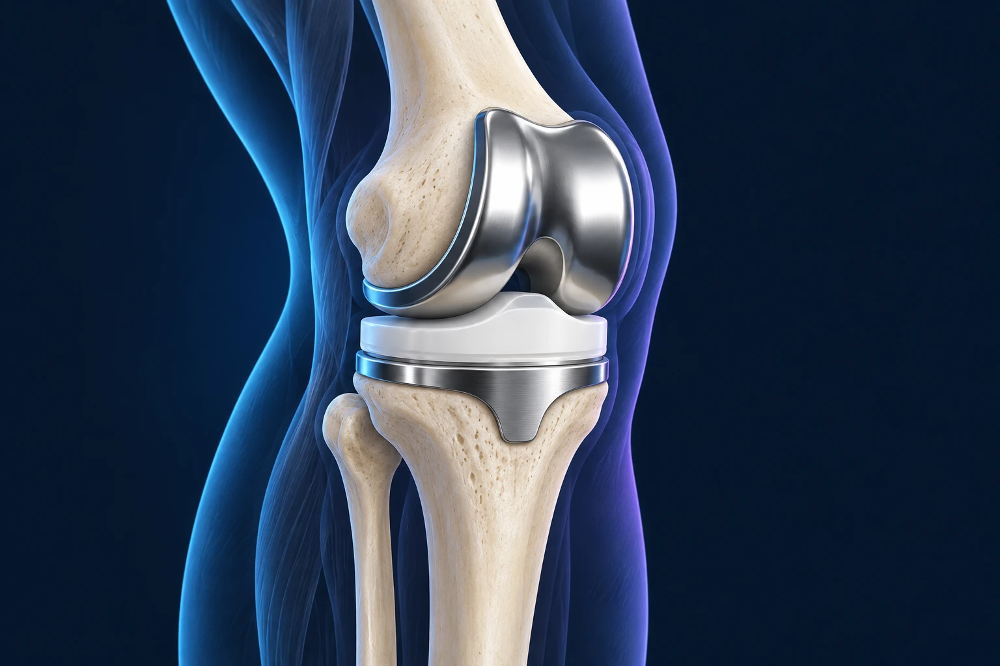
Après une prothèse du genou, la marche, la conduite et le sport reprennent par étapes. Préparation, rééducation et signes à surveiller avec le Dr François Lozach.

Lésion localisée ou arthrose diffuse : comprendre les possibilités de réparation du cartilage du genou, leurs indications et leurs limites.

Après une entorse de cheville, l’absence de douleur ne suffit pas toujours. Rééducation, stabilité et critères de reprise du sport expliqués.

Douleur du tendon d’Achille : adapter les efforts, comprendre la rééducation et reconnaître les signes d’une rupture nécessitant un avis rapide.
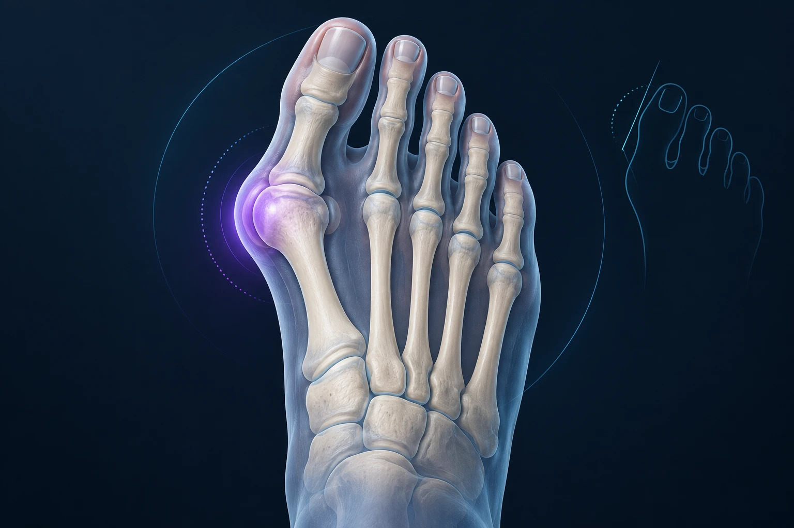
Douleur, chaussage et marche guident la décision d’opérer un hallux valgus. Découvrez les traitements possibles et les étapes de récupération.
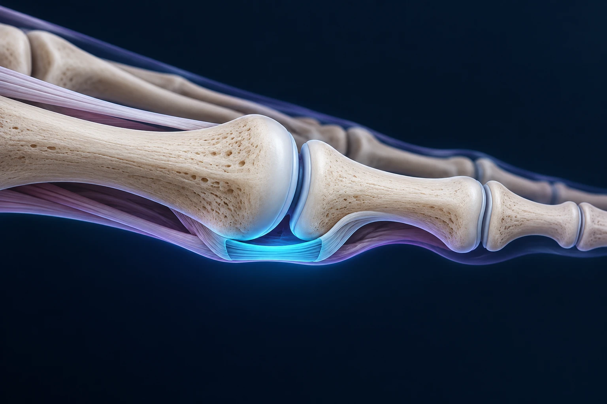
Une douleur sous le deuxième orteil peut venir de la plaque plantaire. Comprendre les symptômes, le bilan et les traitements possibles avec le Dr François Lozach.
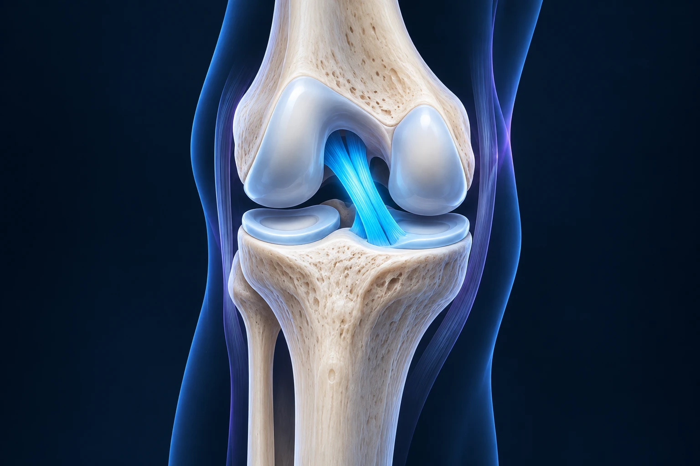
Une rupture du ligament croisé antérieur impose-t-elle une opération ? Stabilité, rééducation, chirurgie et reprise du sport : les points à comprendre.
Une douleur de hanche peut se ressentir dans l’aine, la fesse ou le genou. Comprendre le bilan, les signes d’alerte et les traitements avec le Dr François Lozach.
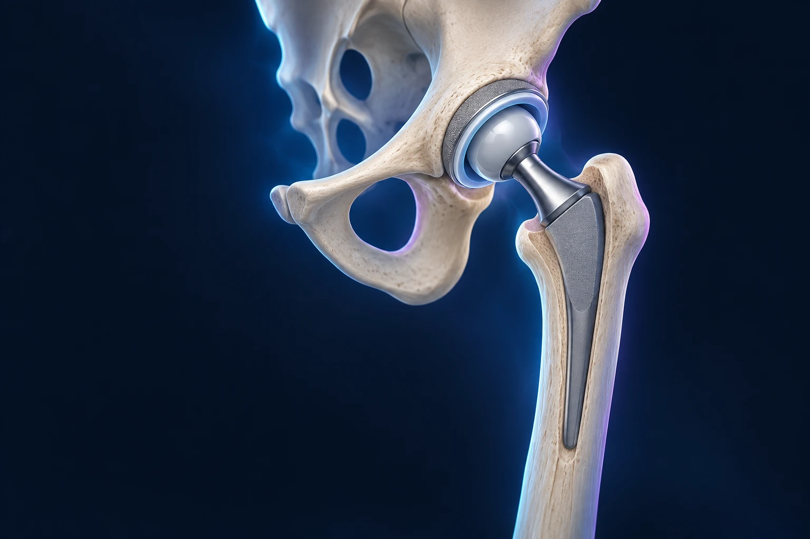
Avant une prothèse de hanche, préparez le domicile, les transports et les soins. Les questions utiles pour organiser votre récupération avec l’équipe.
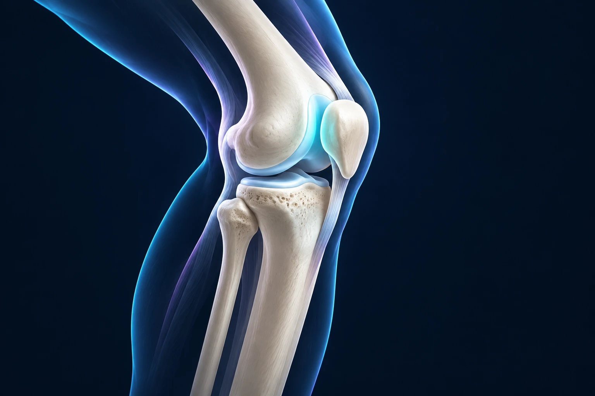
Douleur à l’avant du genou dans les escaliers ou après la position assise : comprendre le bilan, la rééducation et les situations qui font consulter.
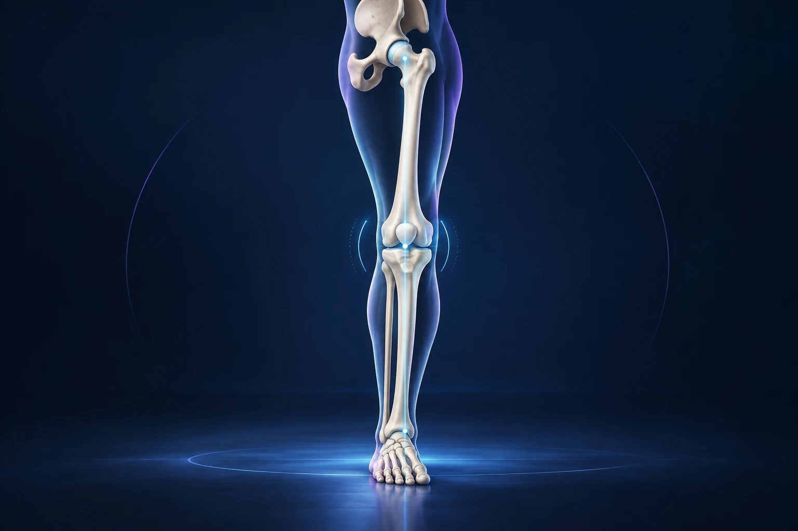
Une ostéotomie peut modifier les charges sur un genou douloureux tout en conservant l’articulation. Comprendre ses indications, limites et suites.

Quand une prothèse partielle du genou est-elle possible ? Les critères du bilan, les bénéfices attendus et les limites à discuter avec le chirurgien.

Brûlure entre les orteils, engourdissement ou sensation de caillou : comprendre le névrome de Morton, son diagnostic et les options de traitement.
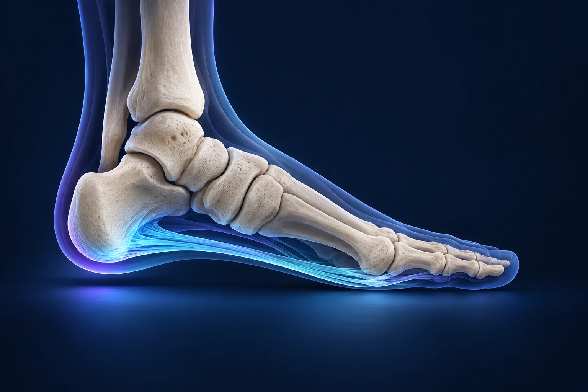
Une épine calcanéenne n’explique pas toutes les douleurs du talon. Comprendre l’aponévrose plantaire, les premiers soins et la reprise des activités.
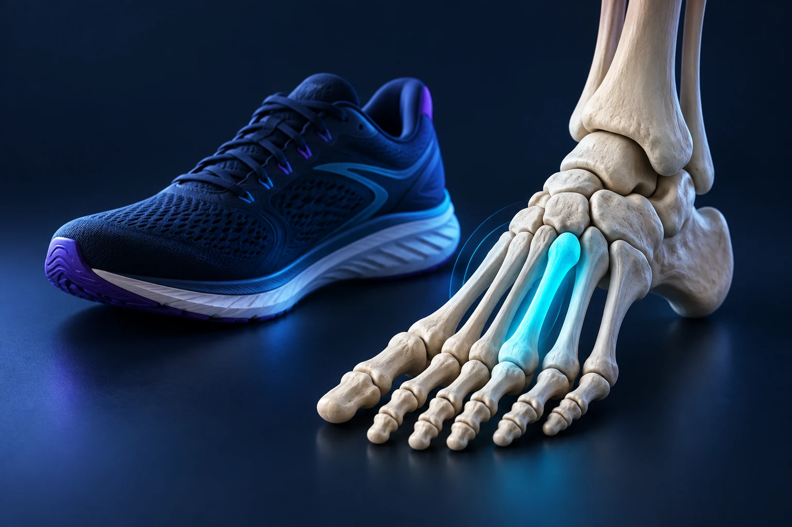
Une fracture de fatigue peut apparaître sans chute et rester invisible sur la première radiographie. Les signes, le bilan et les étapes de reprise.

Que préparer pour une première consultation orthopédique ? Documents, symptômes, traitements déjà essayés et questions pour décider avec le chirurgien.

L’assistance robotique accompagne le chirurgien lors de la pose d’une prothèse du genou. Comprendre son rôle, les données disponibles et ses limites.